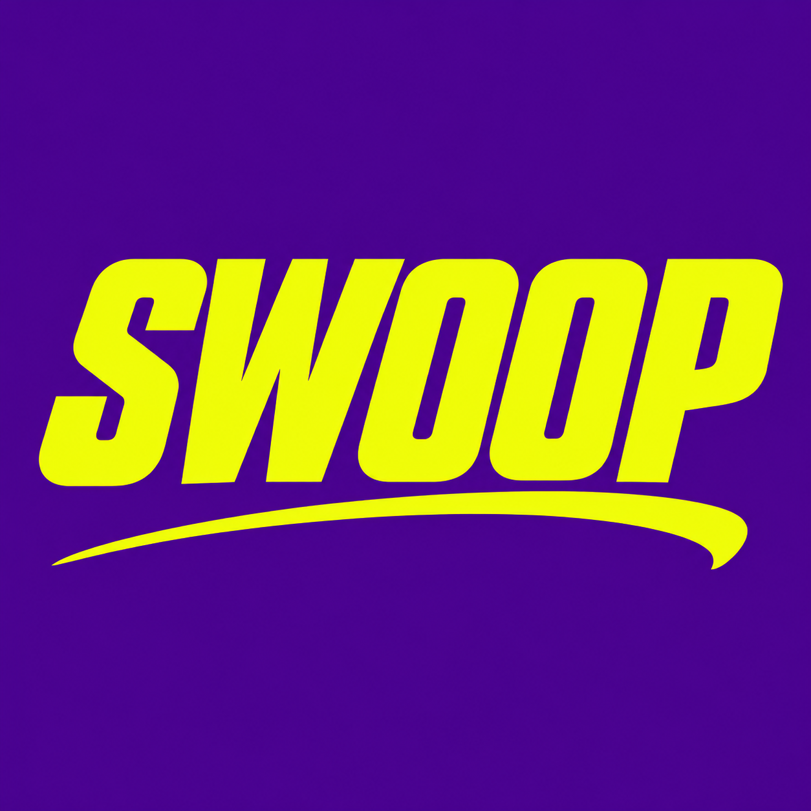

SWOOP · SCHEDULE
Pick the account.
Pick the moment.
Choose Zernio, Postiz, or a local posting reminder. Review the caption, media, destination, and time before confirming.
Choose your scheduler
Open local reminders ↗Connect Zernio
Local Postiz must already be running at http://127.0.0.1:4007. This option does not install a server or connect social accounts for you.
Reading the selected Instagram post…
Media to publish
Choose fewer items if a destination does not support the complete carousel. Items retain their original order.
Destination accounts
Connect Zernio to load your accounts. None are selected automatically.
Platforms to post to manually
No account connection or automatic publishing. Your media and edited caption are saved to Downloads. Import the calendar file for a separate reminder.
Review before scheduling
Recent schedules
These are local receipts. Check the chosen provider for current publishing status or cancellation. Local reminders never publish.
No schedules submitted from SWOOP yet.